Life details
XiaoHei rests on a soft woven cushion. Its seam highlights when selected; the separate red circle is gone.

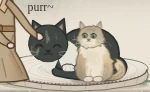

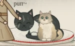
2021: SF → DC via Chicago. 2025: DC → SF through Texas.


Welcome
Explore this place →
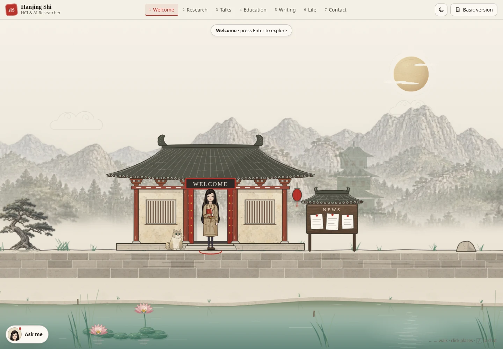

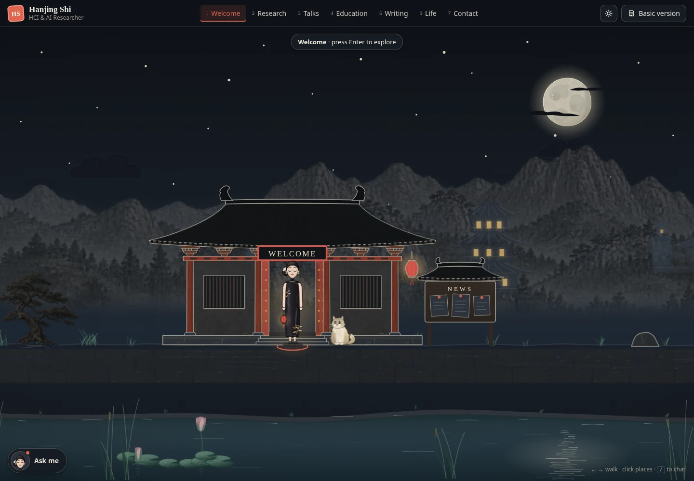
Research
Explore this place →
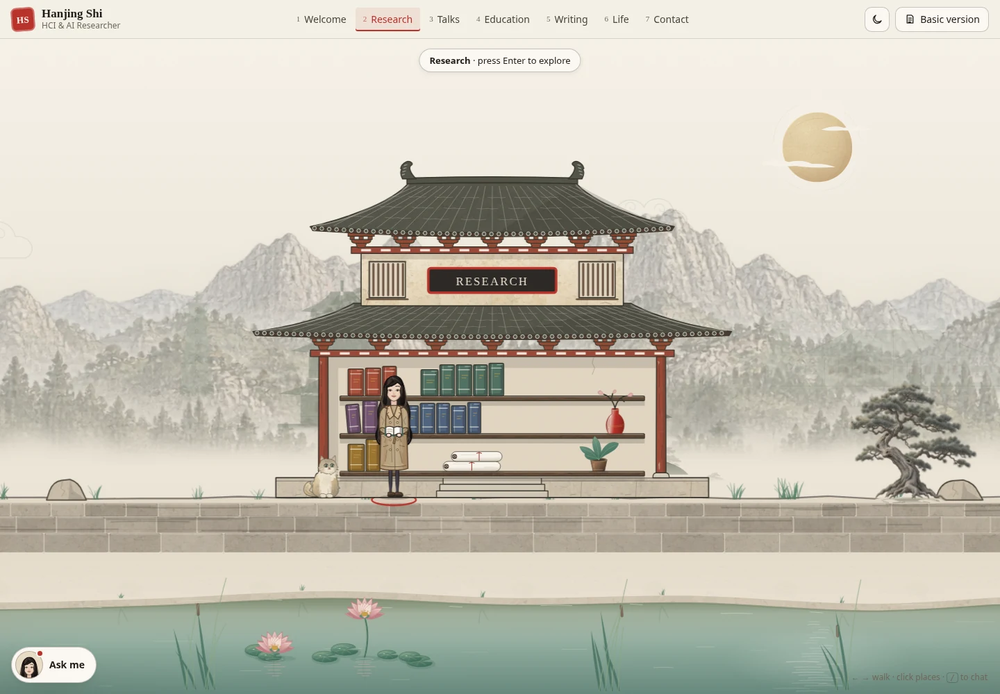

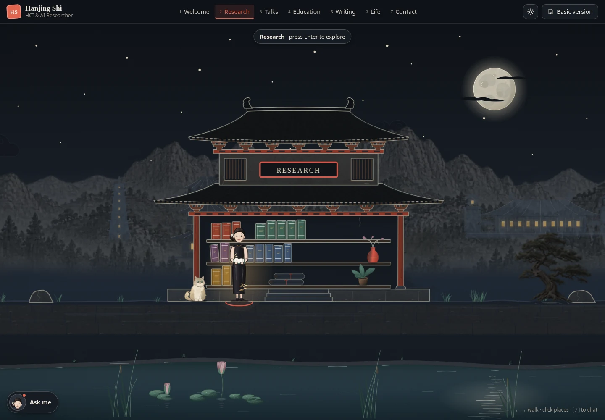
Talks
Explore this place →
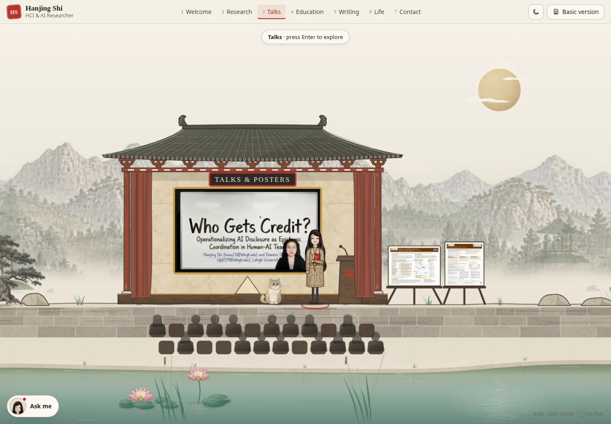

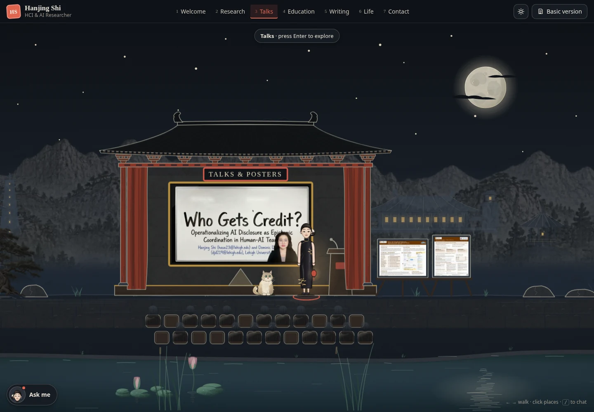
Education
Explore this place →
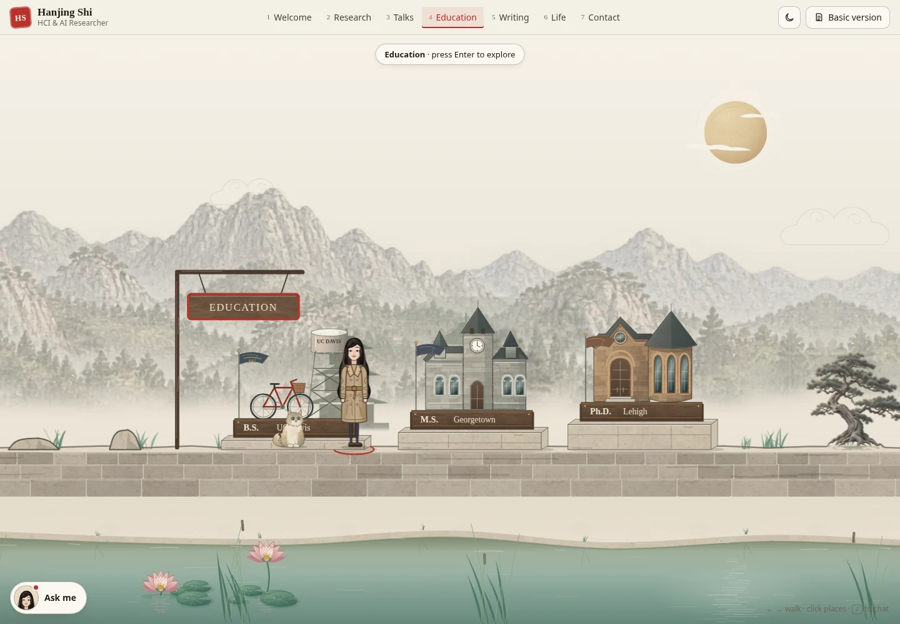

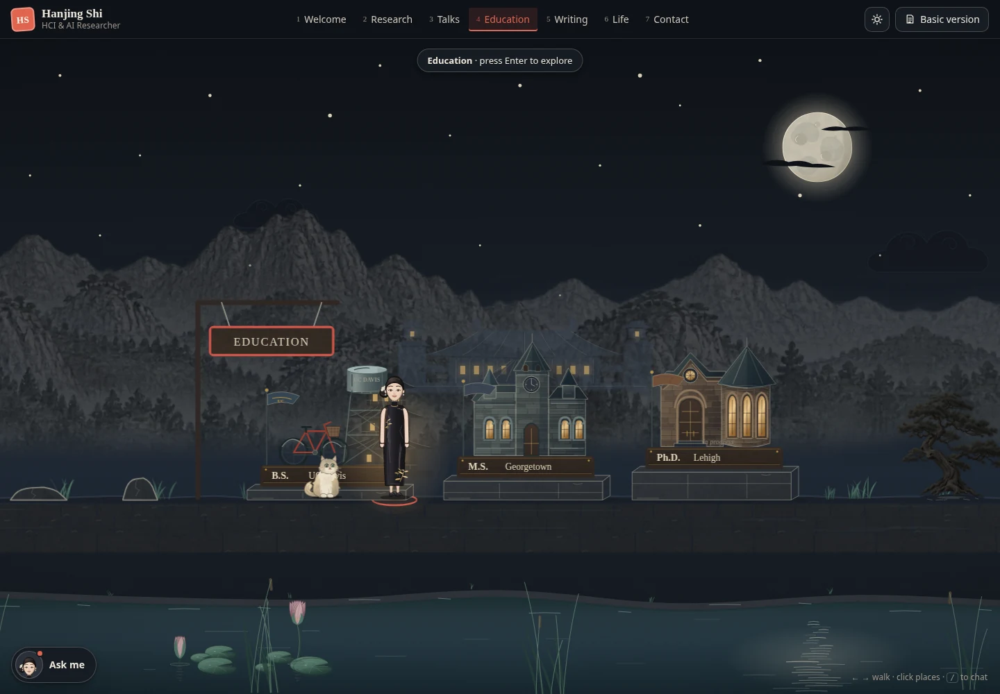
Writing
Explore this place →
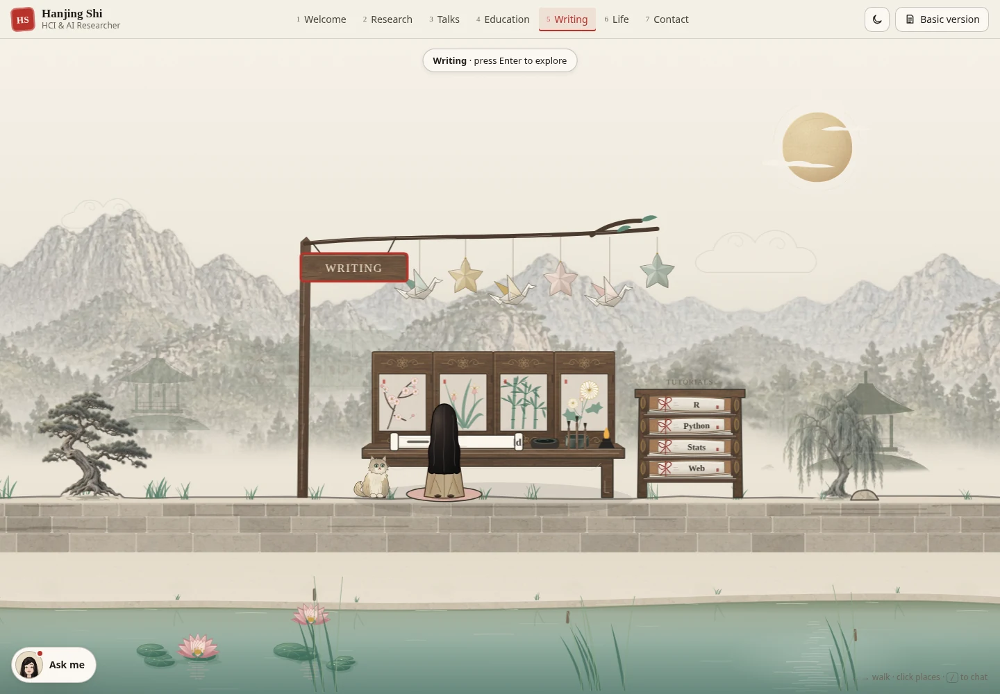

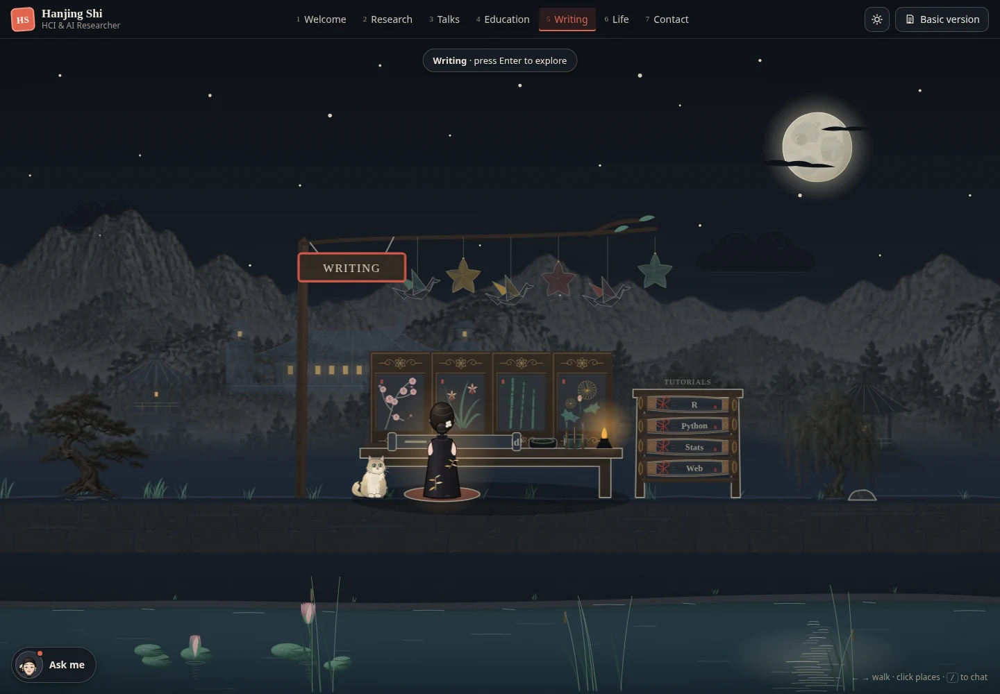

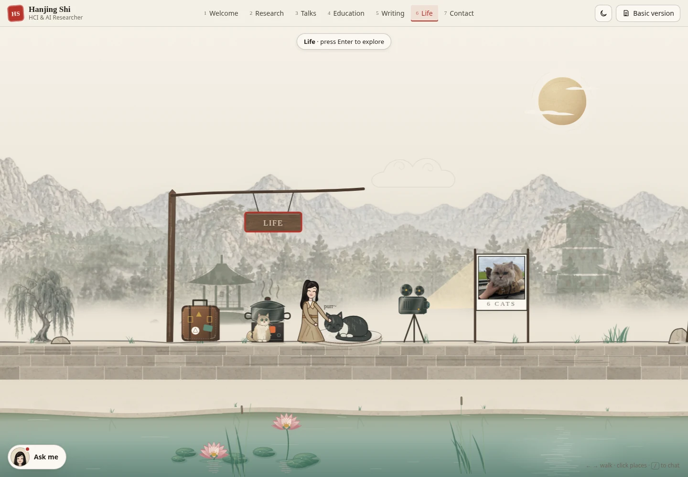

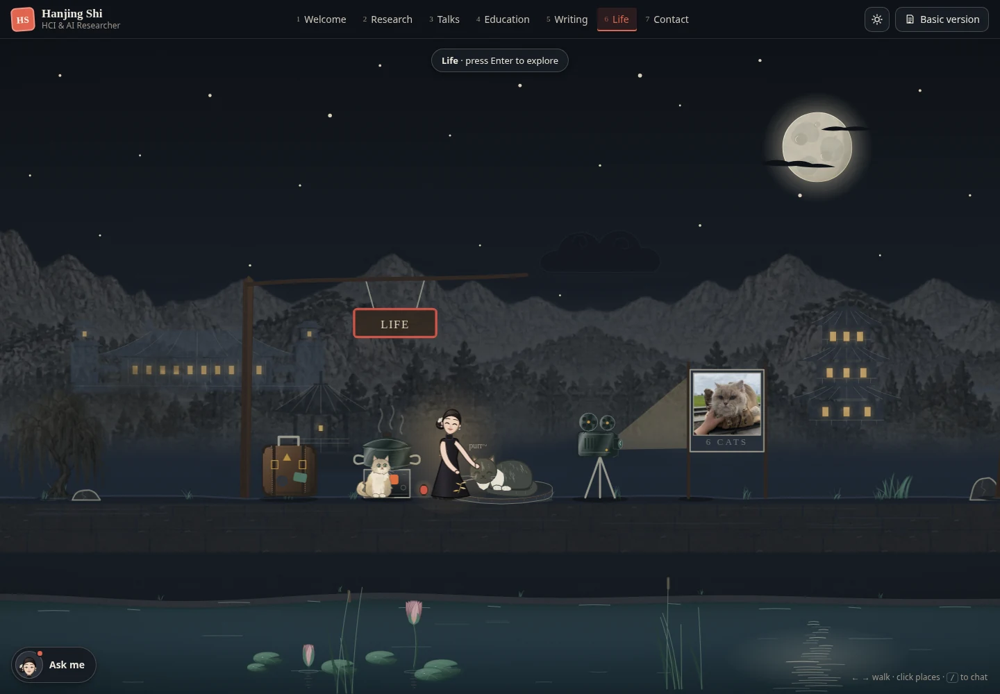
Contact
Explore this place →
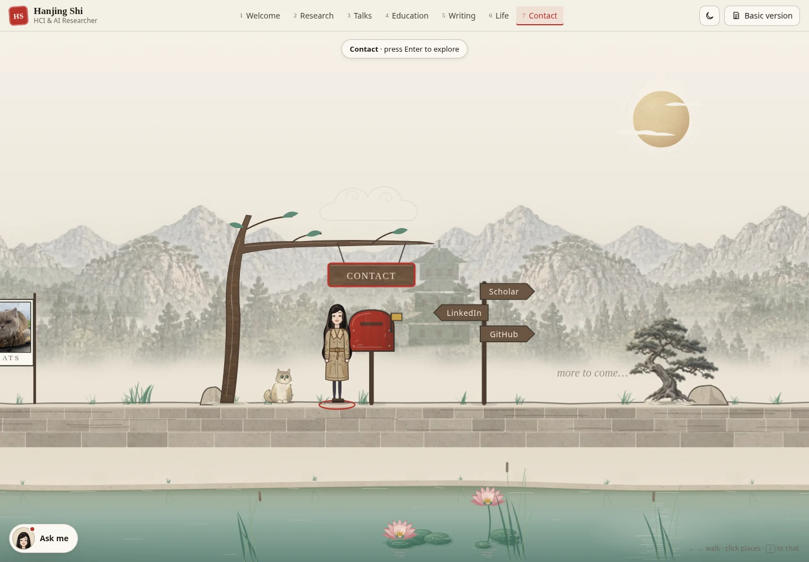

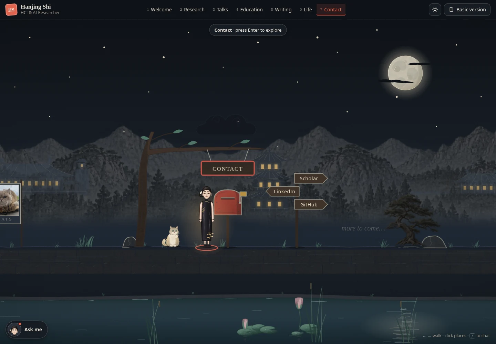